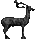
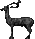

Γεννήθηκα στη Ρόδο το 1911.
Μετά από κάμποσα χρόνια στα θρανία των σχολείων και της ζωής, ανέβηκα και στην έδρα.
Υπηρέτησα την έδρα και την πατρίδα μου για περίπου 55 χρόνια, σε διαφόρων βαθμίδων και ειδικοτήτων σχολεία, με αγάπη και τιμιότητα, σε ότι είπα, σε ότι έγραψα και σε ότι έπραξα.
Τώρα που γέρασα πολύ, ένα έχω να πω, σαν Έλληνας και σαν δάσκαλος. Η Γλώσσα μας, που τόσο την περιφρονούμε, όσο περνούν τα χρόνια, είναι η τρίσβαθη ρίζα που μας κρατάει ακόμα ζωντανούς!
Φώτης Βαρέλης


Ο Φώτης Βαρέλης απεβίωσε το 2012 στη Ρόδο.